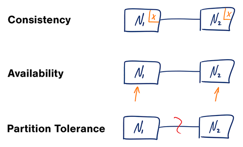

Why it matters
Interview framing
Many interview prompts become easier when you can place each operation on the spectrum between strict correctness and graceful degradation.
Lesson 5 of 5
Designs under partition must choose whether to prioritize fresh coordinated answers or continued service with potentially stale data.
Why it matters
Many interview prompts become easier when you can place each operation on the spectrum between strict correctness and graceful degradation.
Study section
Availability means every request receives a non-error response. Consistency means readers observe the most recent successful write according to the chosen model.
Study section
During a network partition, a distributed system cannot fully provide both availability and strong consistency for every operation. Real systems make operation-specific choices.
Study section
Trade-offs are easier to justify when you connect them to visible outcomes: duplicate notifications, stale counters, temporary read-only modes, or retriable write failures.
Reference diagram

A useful mental model for explaining partition-time trade-offs.
Checklist
Common pitfalls
Interview prompts
Interactive practice lab
Answers stay in your browser so you can come back later without needing automated grading.
Prompt flow
Explain the topic in interviewer-friendly language before diving into implementation details.
Walk the critical path and write down the main components, data flow, and scale decisions.
Close the answer the way a strong interview candidate would: trade-offs, failure modes, and operational follow-through.
interview
Teach "Availability, consistency, and CAP trade-offs" back to an interviewer. Summarize what it is, when you would use it, and why it matters in a real system.
Use these guardrails
Suggested structure
Next steps